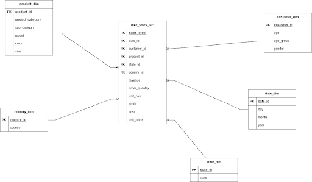
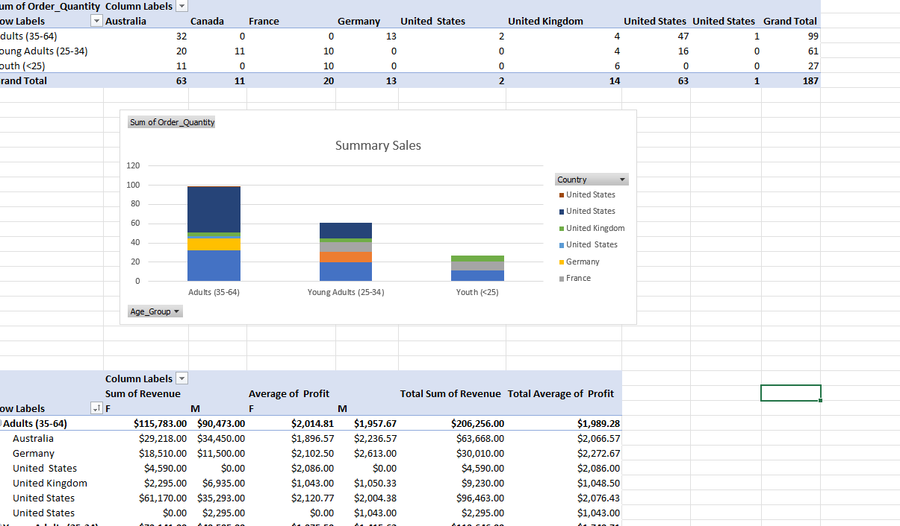
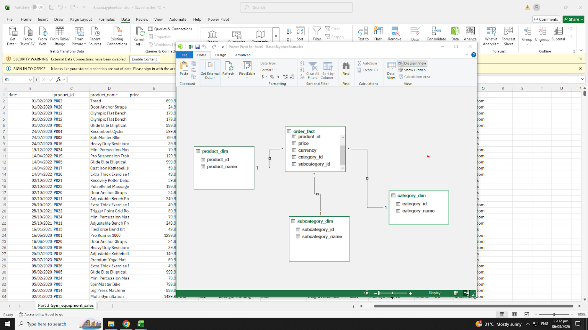
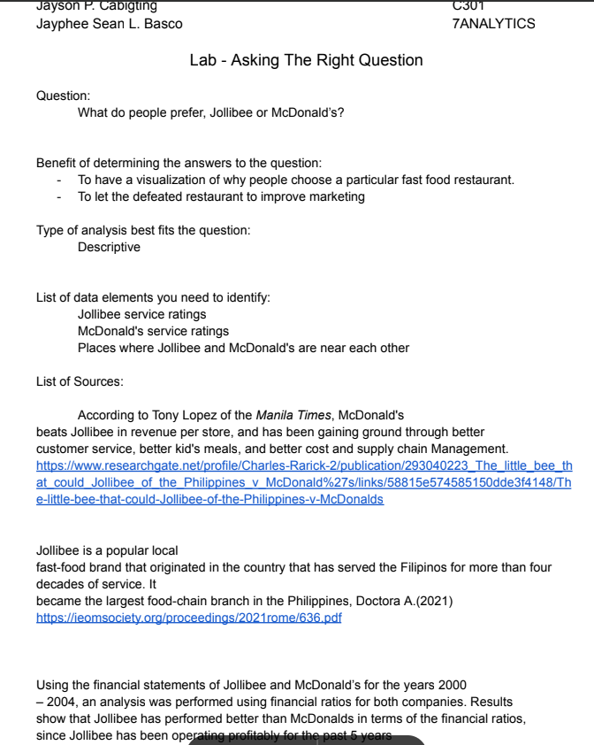
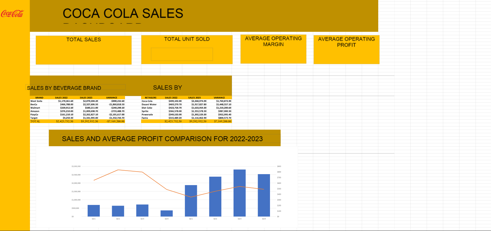
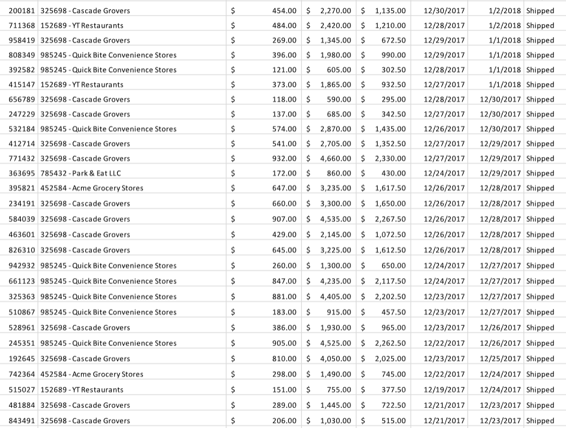

Jayphee Sean Basco
Student Number: 23-0218 | Section: C301
About Me
My name is Jayphee Sean Basco, and I’m someone who values growth, creativity, and meaningful connections. I enjoy exploring new opportunities that challenge me to learn and push beyond my comfort zone. With a positive outlook and determination, I strive to make an impact in everything I do.
Skills
- Adaptability
- Problem-Solving
- Teamwork
- Hardworker
Educational Background
Studied at Sto. Rosario Elementary School
Graduated at Francisco G. Nepomuceno Memorial High School
Present: City College of Angeles, Course: Computer Science
My Projects
Works, Assignments, and More
Projects List
-
Midterm Lab Task 1. Data Cleaning and Preparation
Link: Download

In this activity, I practiced preparing raw data for analysis by cleaning and organizing the dataset in Excel. I removed unnecessary values, corrected formatting issues, and ensured that the data was consistent and accurate. This task helped me understand the importance of clean data before performing any analysis.
-
Midterm Task 2. Pivot Tables and Charts in Excel
Link: Download

In this activity, I used Pivot Tables to summarize and analyze large sets of data in Microsoft Excel. I organized the data into meaningful categories and created charts to visually present the results. This task improved my ability to analyze data and present information clearly through visualizations.
-
Midterm Task 3. Normalization using Power Query
Link: Download

In this activity, I used Power Query to normalize and transform the dataset into a more structured format. The process involved separating and organizing data into tables that follow proper data relationships. This helped me understand how normalization improves data management and analysis.
-
Paired Task 1 Asking the Right Questions
Link: Download

In this practice activity, we think of an innovated argument where we think of the solution of it we also provided related studies to support our solution to the questions that we made.
-
Practice Task 1 Demo File for Data Preparation and Cleaning
Link: Download

In this practice activity, I applied different techniques for cleaning and preparing data in Excel. I identified errors, removed duplicates, and formatted the dataset to make it easier to analyze. This exercise strengthened my understanding of the data preparation process.
-
Practice Task_2_MS Excel Functions
Link: Download

In this activity, I practiced using different Microsoft Excel functions to perform calculations and analyze data. Functions such as SUM, AVERAGE, and IF were used to automate data processing tasks. This helped me improve my efficiency in handling and analyzing spreadsheet data.
-
Practice Task 3_Demo Creating Dashboards in Excel
Link: Download

In this activity, I created a simple dashboard in Excel to visually present important data insights. I used charts, tables, and formatting tools to organize the information in a clear and interactive way. This task helped me understand how dashboards can make data easier to interpret and present.
-
Task 4. Power Query Demo
Link: Download

In this activity, I explored the basic features of Power Query in Microsoft Excel. I used it to import, transform, and organize data from different sources. This helped me learn how Power Query can automate data preparation and make data analysis more efficient.